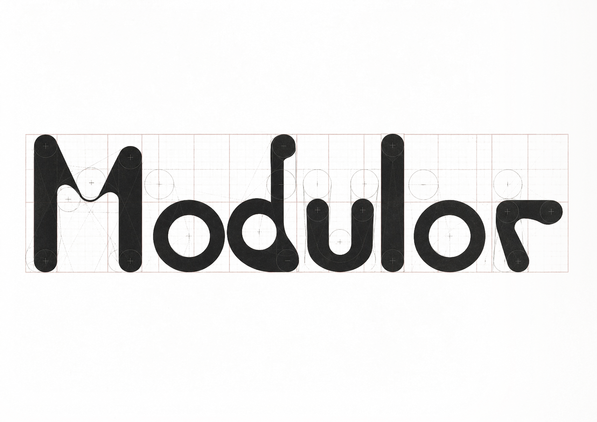
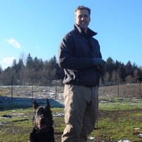

musculoskeletal injury risk.
Soft-tissue injuries are the #1 cause of lost games in elite sport — and they are getting worse.
Strength has force plates. Speed has timing gates. Recovery has Normatec. Flexibility and joint mobility — the biggest levers for injury prevention — are still estimated by eye and documented on paper.
- No measurement→Manual goniometry has 5–10° error; tight hamstrings, hip asymmetries, ankle restrictions go undetected until an athlete pulls up. Norkin & White, Measurement of Joint Motion, 5th ed., 2016
- No consistency→No standardized force, no protocol control — 30% of hamstring & adductor injuries re-occur despite modern S&C. Ekstrand et al., Br J Sports Med, 2023
- No longitudinal data→When an athlete tears a muscle, there is no flexibility trend data to analyze — the warning signs were never captured.
- No readiness data→For SOF and high-performance military units, MSK injury is a readiness event. Every down day is a capability gap you cannot fill.
The numbers, on the record.
25% of NFL players suffer a lower-extremity strain every season. 33% re-injury rate.
Jenkins et al., 12-yr review of 2,101 NFL hamstring injuries, Orthop J Sports Med, 2024
21% of pro footballers suffer a groin/adductor injury every season; 68% adductor-related.
Werner et al., 17-club / 606-player UEFA prospective study, Br J Sports Med
Hamstring injuries doubled from 12% to 24% of all injuries in men's pro football over 21 years.
Ekstrand et al., UEFA Elite Club Injury Study, Br J Sports Med, 2023
Restricted hip internal rotation and ankle dorsiflexion are independent risk factors for ACL injury — 83% of studies in a 2,819-athlete review confirmed the link.
Belkhelladi, Cierson & Martineau, Orthop J Sports Med, 2025
Top LaLiga clubs lose €7M+ annually to muscle injuries. Premier League teams spent £266M total on sidelined players' wages in 2023/24 — £83M on hamstrings alone.
Melcón-Ballesteros et al., PLOS One 2024 · Premier Injuries Ltd. 2024
Keep athletes on the field. Extend their careers. Sharpen their edge.
The athlete straps in. A motorized cable stretches them at calibrated force. Onboard sensors feel exactly where tissue yields. A depth camera catches the compensations that mask true range. Every session, a structured record of what was actually found.
- From guesswork→To precision: motorized cable tension at constant force, joint angle measured to ±2° by depth camera.
- From reactive care→To proactive prevention: longitudinal ROM trends and asymmetry alerts quantify mobility loss and side-to-side drift, session over session.
- From missed games→To more starts: athletes recover faster, move better, and stay on the field — the metric that matters most.
Strap in. Get stretched. Get measured.
The athlete straps in, attaches a quick-release cuff, and the machine does the rest — no clinician, no partner required.
- Strap in→Guided position, quick-release cuff. Under a minute.
- Machine stretches→Force-controlled cable. Identical calibrated load every rep. Backdriveable and safe.
- Feels the tension→Inline load cell reads resistance and end-range tolerance continuously.
- Detects deficiencies→Depth camera flags pelvic rotation, trunk shift, knee bend — compensations on the record.
Eight minutes. Nine variables. Zero guesswork.
Method claim: steps 100–112 define the complete closed-loop control system with longitudinal feedback. ↻ closed loop.
In 1945, Le Corbusier published Le Modulor — a system of proportions derived from the human body and tuned to the golden section.
He used it to design buildings that fit people: at the scale of a hand on a banister, an arm raised overhead.
Modulor is the measurement system for the tissue performance medicine still estimates by eye.

Nine variables. Measured, not estimated.
Three independent sensor inputs — depth camera, inline load cell, motor encoder — fused at 100 Hz. Nine derived variables. One longitudinal risk score.
Joint Angle
Peak passive ROM at standardized force. ±2° accuracy. Comparable across sessions.
Cable Force
Inline load cell at 100 Hz. Logs tension ramp, peak force, variability during hold.
Asymmetry
Left vs. right at matched force. Flags differences > 10%. Tracks resolution over time.
Hold Time
Duration at end-range without retreating. A neuromuscular tolerance metric.
Compensation
Camera detects pelvic rotation, knee bend, trunk shift. Quantified, not eyeballed.
Tolerance
Force level where the athlete first reports discomfort or resists. Tracked over weeks.
Pain Response
Binary flag per rep. Correlated with force and ROM to build a tissue-response profile.
Tension Ramp
Rate of force acceptance during initial stretch. Indicates tissue readiness and stiffness.
Session Δ
Acute ROM gain per session. Chronic trend over weeks. The metric that matters most.
Motorized stretching, real-time measurement, longitudinal data. No integrated platform.
The real competitive set is the full injury-risk measurement ecosystem — force plates (VALD, Hawkin), motion capture (Theia, Sparta), and stretch-focused hardware (StretchLab, Normatec, Hyperice). Each owns a slice. Modulor integrates motorized, force-controlled stretching with real-time biomechanical measurement and longitudinal data — the only intervention surface that also generates the measurement corpus.
Force plates
VALD, Hawkin. Jump/squat output. Adjacent budget. No ROM, no stretch.
Motion capture
Theia, Sparta. Markerless kinematics. No load, no intervention.
Biodex / Cybex
Clinical isokinetic. $100K+. Not for stretch protocols. No vision.
StretchLab
Manual 1:1 service. $60/session. No measurement, no data.
Normatec / Hyperice
Compression + percussion. No active stretch, no ROM.
Manual PT
Subjective. No force control. Rarely longitudinal.
Five buyers. One data asset. Sequenced, not simultaneous.
Stretching is the wedge. The product is a measurement + risk-pricing layer. Seed-stage wedge is pro + collegiate Teams. DoD is non-dilutive capital, not first-pilot. Insurance, Leagues, Strategic unlock as the corpus compounds.
Teams — Pro + Collegiate
~800 addressable programs in NA + EU. Target $60K/yr/station. Every franchise has a training-room budget and an injury-prevention mandate.
Insurers — WC + Disability
$70B+ US market. MSK is ~40% of claims. Long-term — unlocks after peer-reviewed validation + 10K+ athlete-months in corpus. Mature target: $250K–$1M/carrier/yr. Not a seed-stage revenue claim.
DoD / Special Operations
~800K MSK injuries/yr active-duty — 100× pro sport. SOFWERX, AFWERX, DIU are funded pilot rails. Same hardware; subscription fits training-hub budgets.
Leagues + Players' Associations
Roster-level availability models. Standardized injury reporting aligned to CBAs. Long sales cycle — large check.
Hyperice · Catapult · Nike
Patent + data corpus are the asset. Acquisition-optimized. Adjacent distribution already owns the consumer surface.
The device is the collection mechanism. The moat is everything it builds.
USPTO Provisional 64/040,028 · filed Apr 15, 2026 · 35 U.S.C. §111(b). A competitor can build a cable machine. They cannot replicate three years of elite-athlete flexibility data, a peer-reviewed MSK injury-risk study, and a workflow embedded in every major AMS.
Normative database
ROM norms for NFL linemen, Army Rangers, D-I athletes — by position, by load, by season. 3–5 years to replicate.
Clinical validation
Peer-reviewed hazard-ratio curves linking ROM / asymmetry deltas to MSK injury — becomes the citation standard.
AMS + switching cost
Once Modulor ROM Δ is the return-to-play criterion and data flows into Smartabase / Catapult, switching loses the longitudinal record.
FDA 510(k) blocker
Clearance for the injury-risk scoring output puts any clinical-space competitor 12–24 months behind us in queue.
100× the injury volume. Non-dilutive capital. Parallel track.
MSK injury is the #1 cause of lost duty days across every service branch. ~800K/yr active-duty MSK injuries; $3.7B annual cost. We pursue this in parallel — funded by the government, not the seed.
AFWERX · Air Force SBIR
Open Topic quarterly. $75K Phase I (3 mo) → $1.7M Phase II (9 mo) → $15M STRATFI. Target sponsor: PJ / combat controller / pilot training units.
SOFWERX · USSOCOM
Tier-1 operators = closest analog to pro athletes. CRADA + funded pilot via Tech Experimentation event. $250K–$3M, 90–180 days.
DIU · Prototype OTA
Dual-use commercial-first. $1–20M prototype awards. Unlocked after first commercial pilot revenue. Target: Year 2.
DHA · CHAMP clinical
Peer-reviewed ROM/asymmetry → MSK injury-risk paper. Unlocks the insurance licensing narrative. 6–24 mo, $500K–$10M R&D.
Multiple revenue streams. Hardware-led foundation.
2026–2027 · Launch
- Hardware sales70%
- SaaS subscriptions15%
- Service / install15%
2028+ · Scale
- SaaS subscriptions45%
- Hardware sales30%
- Data + insights15%
- Service / install10%
Raising $3M Seed — strategic-led preferred.
30-month runway. 5–8 pilot stations deployed. Patent utility conversion. Path to Series A on $2–4M ARR + insurance LOI.
- Hardware — prototype, pilot stations, tooling40% · $1.2M
- Engineering — firmware, CV/ML, full-stack30% · $900K
- GTM — pilot ops, clinical, partnerships15% · $450K
- IP — utility conversion, PCT, continuations10% · $300K
- Reserve — legal, ops, contingency5% · $150K
● Hardware
$1.2M- Mechanical, CAD, frame fab$250K
- Motor + gearbox × 8 stations$320K
- Camera, load cell, compute × 8$180K
- Tooling + small-run setup$200K
- v1.5 + PNF firmware iteration$150K
- Shop, assembly, QA$100K
● Engineering
$900K- Firmware — PID, PNF, safety$220K
- CV/ML — comp detect, fusion$260K
- Full-stack — API, AMS, dash$200K
- Mech / EE fractional$150K
- Cloud, data, security$70K
● GTM
$450K- Pilot ops × 5–8 sites$150K
- Clinical validation study$120K
- DoD SBIR consultant + travel$60K
- Fractional VP Sales$80K
- Case studies, conferences$40K
● IP
$300K- Utility patent conversion (3 claims)$45K
- PCT — international protection$60K
- Continuations$90K
- Data-rights counsel$60K
- Trademark, prior art, strategy$45K
A product founder, a warfighter engineer, and a DoD-tested advisor.

- Corner Of (iOS) — Blind Tiger, Bleecker Street Bar, Little Ways, Blue Haven, The Flower Shop & more; $25K pre-seed, 500+ waitlist
- Dexian — $1.3M sales revenue across finance, banking & insurance
- Led AI pilot that cut manual data entry 80%
- Walk-on UM Football — the athlete's perspective, built in

- Lead Engineer, Warfighter Training Systems — built DoD training hardware
- JTAC — the exact operator this machine is built to protect
- Deputy Chief, Integrated Warfare Division, Pentagon
- 711 HPW (AFRL), Special Warfare wings, operator squadrons

- Former Chair of Entrepreneurship, U. of Kentucky (2018–2022) — built the MBA Entrepreneurship concentration
- CSO, InstantHandz — $1M valuation, $250K+ revenue serving Armed Forces families
- AFWERX/SOFWERX judge · Harvard NPLI fellow · USAF Master Resilience Trainer
- Founder, Special O.P.S. Inc. · FSMTB national board (writes the licensing exam)
$3M seed — strategic-led. Three seats on the cap table.
The thesis is defined. The IP is filed. The product is scoped. We are raising the smallest round that buys 30 months and the right partners on the cap table.
Strategic Investor
- $1–1.5M lead
- Distribution, data-licensing, or DoD pilot-budget intent letter
- Board observer seat
Sports-Specific Fund
- $500K–$1M
- 3–5 warm intros to flagship pilot programs
- Governance seat or observer
Athlete / Operator Syndicate
- $25K–$250K per participant
- 3–5 named advocates at close
- No board seat
- USPTO provisional 64/040,028 filed Apr 15, 2026
- Full product scope + BOM
- Data-rights contract template
- Pilot conversations active
- Design docs public (19)
- 5–8 pilot stations deployed
- Utility patent + PCT
- PNF at V1.5 — clinical parity
- AFWERX Phase I submission
- First insurance LOI
- $2–4M ARR
- 25K+ athlete-months in corpus
- 1 insurer data-licensing pilot
- 3+ AMS integrations live
- DoD non-dilutive awarded
Measured range.
Data on every rep.